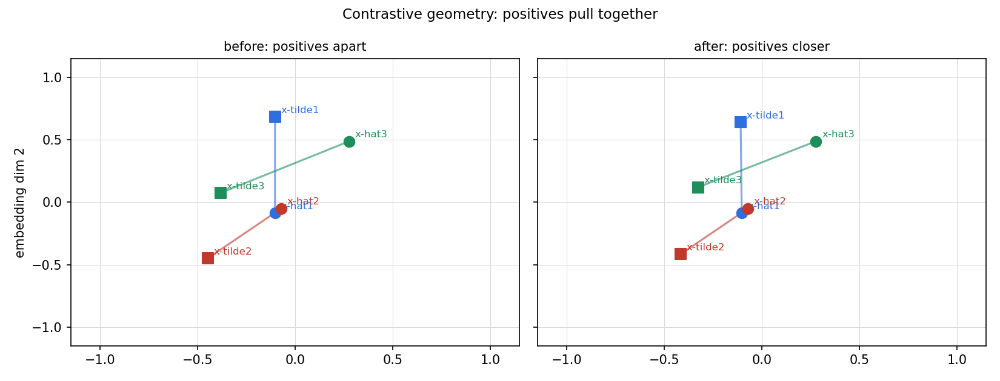
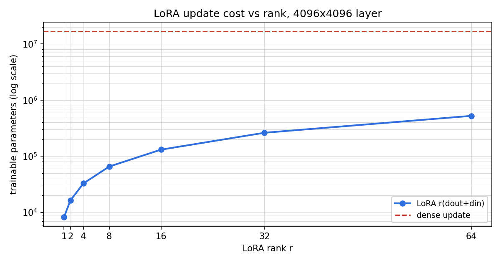

Lesson 13 · Foundation models, representations
Lesson 13, Foundation models and representations
Unit: cs229-U13. Leaf concepts: cs229-U13-C01 to C12 (pretraining/transfer, linear probing, full fine-tuning, LoRA, supervised representations, contrastive objective, negative selection, semantic retrieval, RAG, embedding evaluation, downstream generalization, data/metric limitations). Date: 2026-10-06. Baseline: October 6, 2026.
Source mapping
Chapters 15 (SRC-01, PDF pages 192-195) and 16 (SRC-01, PDF pages 197-201) were read in full on 2026-10-06: the pretraining loss (15.1), linear probing (15.2), finetuning (15.3-15.5), LP-FT, LoRA (15.6-15.8), supervised pretraining (16.1), the SIMCLR contrastive loss, semantic retrieval with embeddings, Recall@k and NDCG (16.1-16.3), and RAG (Figure 16.2). Lecture 12 and 13 transcripts cover foundation models and representation learning (SRC-02), headers inspected, transcript content not yet read in depth. Downstream-generalization claims beyond the Kumar et al. [2022] citation are standard background. Taught at that boundary. Leaf rows carry SOURCE ATTRIBUTION PENDING until the RUN 6 pass.
Scope and objectives
Scope: the foundation-model paradigm (pretrain once on broad data, adapt cheaply to many tasks) and two concrete representation-learning methods (supervised pretraining, contrastive learning), plus how embeddings are used and evaluated for retrieval.
Objectives: the learner can (1) write the pretraining loss and the adaptation losses, (2) compare probing, finetuning, LP-FT, and LoRA on parameters and behavior, (3) compute the contrastive loss on a toy batch, (4) evaluate a retrieval system with Recall@k and NDCG, and (5) state the data and metric limitations of each piece.
Dependencies
Prerequisites: P10, P11, P14 (shared bridges, linked). Unit U07 (neural nets).
Not-yet-understood list:
- Why self-supervision transfers (remediated in SL-01).
- What the contrastive loss actually optimizes (remediated in SL-04).
SL-01: Pretraining and transfer
Covers C01 (pretraining/transfer).
Source anchor
SRC-01 section 15, pages 191-192. Supervised learning needs labeled data, which is costly. Since about 2018, models such as BERT [Devlin et al., 2019] and GPT-3 [Brown et al., 2020] shifted the field: pretrain on broad data at scale, then adapt to many downstream tasks. Bommasani et al. [2021] call these foundation models. The supervision is self-supervised: constructed from the input itself (next-token prediction, masked-patch prediction).
The two phases
Pretraining: minimize
L_pre(theta) = (1/n) sum_i l_pre(x^(i), theta) (15.1)
over a large, usually unlabeled dataset. Optimize with SGD or Adam. Call the result theta-hat.
Adaptation: solve a downstream task with labeled data {(x_task^(i), y_task^(i))}, usually with n_task much smaller than n. Five to ten labeled examples is few-shot learning. Zero labeled examples (only a natural-language task description) is zero-shot learning, the notes defer the zero-shot setting to later chapters.
Motivating question
Labels are expensive. How do you get one model to serve a hundred tasks without labeling a hundred datasets?
Mental model
Pretraining teaches the model the structure of the world (or of language, or images) from raw data. Adaptation teaches it the small extra step: how to read the task out of that structure. The intuition the notes state: broad pretraining data teaches broad structure that transfers. Scale can add emergent capabilities, but the mechanism taught here is transfer of representations, not magic.
Correctness checks
- l_pre must be computable from x^(i) alone. If it needs a label, it is not self-supervised.
- n_task << n. If the downstream dataset is as large as the pretraining set, the paradigm buys nothing.
Nearest alternative
Train one supervised model per task from scratch. Wins when labels are cheap and tasks are unrelated, loses everywhere else.
Failure case
Pretraining on narrow data then adapting far away: the “broad structure” is not broad and transfer fails. The data distribution matters more than the method name.
SL-02: Probing, finetuning, LP-FT
Covers C02 (linear probing), C03 (full fine-tuning).
Source anchor
SRC-01 section 15.1, pages 193-195. A representation model phi_theta maps a raw input x to a vector phi_theta(x): the feature vector, embedding, or representation. After pretraining we hold phi_theta-hat.
Linear probing freezes phi_theta-hat and trains only a head w: predictions are w^T phi_theta-hat(x). For regression, solve
min_w (1/n_task) sum_i (y_task^(i) - w^T phi_theta-hat(x_task^(i)))^2. (15.2)
Finetuning trains both w and theta, starting from theta-hat and a random w (15.3-15.5). Continued pretraining is the same idea with the pretraining loss on new unlabeled data from a closer distribution.
LP-FT
Linear probing then finetuning: first probe (frozen backbone, learned head), then finetune everything starting from the probe head and theta-hat. The first stage finds a task-specific readout of the pretrained representation, the second stage lets the representation adjust. Proposed to reduce bad feature distortion during finetuning [Kumar et al., 2022], it can improve out-of-distribution performance in some settings.
Motivating question
You have a pretrained backbone and 200 labeled examples. Do you touch the backbone weights?
Mental model
Probing asks: “is the answer already readable in the representation?” If yes, a linear head suffices and the backbone stays intact. Finetuning asks: “can the representation itself improve for this task?” It can, but with few examples it can also distort good features. LP-FT gets both: a good readout first, then careful adjustment.
Computed example
Regression probe on a toy: 6 points with phi(x_i) = [i, 1] for i = 1..6 and targets y = [1, 2, 3, 4, 5, 6]. The least-squares head is w = [1.0, 0.0] with train MSE 0.0 (exact fit). Probing is convex: one closed-form solution, no learning-rate tuning.
Correctness checks
- The probe must freeze the backbone. If gradients reach theta, it is a finetune, not probing, and the comparison is void.
- LP-FT must start stage two from the stage- one head. Random re-initialization of the head discards the benefit.
Nearest alternative
k-NN on frozen embeddings: no training at all. Wins for tiny n_task, loses when the readout needs real supervision.
Failure case
Finetuning a huge model on 50 examples with a large learning rate: the pretrained features distort and both in-distribution and out-of-distribution accuracy drop below the probe. This is the failure LP-FT was built for.
SL-03: LoRA
Covers C04 (LoRA).
Source anchor
SRC-01 section 15.2, page 195. Full finetuning updates every parameter. When the downstream task is not far from pretraining, the update may not need all degrees of freedom. Low-rank adaptation (LoRA, Hu et al. [2022]) freezes the pretrained weight W_0 and trains a low-rank update:
Delta W = B A, B in R^{d_out x r}, A in R^{r x d_in}, (15.6)
usually scaled as h = W_0 x + (alpha / r) B A x. (15.7)
Parameter accounting
A dense update has d_out * d_in trainable parameters. LoRA has r (d_out + d_in) (15.8). The rank r controls the update dimension, alpha controls its size relative to the frozen matrix. Initialize one factor to zero (for example B = 0) so the adapted model starts as exactly the pretrained model. Note: only the change is low rank, W_0 itself stays full rank.
The memory nuance
LoRA cuts the parameters, gradients, and optimizer states of the update. It does not cut the base weights W_0 (still stored and used in forward and backward) or the activations needed for backprop. Where base weights and activations dominate memory (large-model data/model parallel training), training-time memory savings are limited, and compute savings are small: the base model still runs forward and backward.
Where LoRA wins
Multi-tenant serving and training. Each adapter is small, so many task-specific adapters for one base model fit in CPU or GPU memory and swap fast. One fleet of machines serves many customized models nearly simultaneously. The expressivity tradeoff: low-rank updates suffice for nearby tasks, large distribution shifts still want full-parameter training.
Computed example
One attention projection, d_out = d_in = 4096, r = 8, alpha = 16. Dense update: 16,777,216 parameters. LoRA: 8 * 8192 = 65,536 parameters, a 256x reduction. The scaling factor alpha / r = 2. The script plots trainable parameters versus r for r in {1, 2, 4, 8, 16, 32, 64}.
Correctness checks
- At initialization the model must equal the pretrained model exactly. If not, the zero-init is wrong and step-zero behavior changes.
- Trainable count must equal r (d_out + d_in). If your framework reports more, some base parameter is unfrozen.
Nearest alternative
Full finetuning: more expressive, more memory. Adapter layers (bottleneck MLPs inserted per block): similar spirit, extra inference latency. LoRA merges into W_0 at inference for zero overhead.
Failure case
Large distribution shift with r = 4: the low-rank update cannot express the needed change and the model underfits while full finetuning succeeds. Rank is a capacity knob, not a free lunch.
SL-04: Supervised and contrastive representations
Covers C05 (supervised representations), C06 (contrastive objective), C07 (negative selection).
Source anchor
SRC-01 chapter 16, pages 196-198. Two concrete pretraining methods.
Supervised pretraining (16.1): train a neural net on a large labeled dataset (for example ImageNet) with vanilla supervised learning, write it as U phi_theta-hat(x) with U the last layer, discard U, and keep the penultimate activations phi_theta-hat(x) as the representation.
Contrastive learning (16.2): self-supervised, unlabeled data only. The intuition: similar inputs get similar representations, random pairs get distinct ones. Positives come from data augmentation: two random augmentations (crop, flip, color) of the same image x, called x-hat and x-tilde. Negatives (random pairs): an augmentation of a different image z. The notes warn the term “negative” is imperfect: a random pair can be semantically related by chance.
The SIMCLR loss
On a batch of B examples with two augmentations each (2B items), the notes give a simplified variant of the SIMCLR loss [Chen et al., 2020]:
L_pre(theta) = -sum_{i=1}^{B} log( exp(phi(x-hat^(i))^T phi(x-tilde^(i))) / (exp(phi(x-hat^(i))^T phi(x-tilde^(i))) + sum_{j != i} exp(phi(x-hat^(i))^T phi(x-tilde^(j))))).
The loss decreases when the positive inner product grows and increases when a negative inner product grows, so minimizing it pulls positives together and pushes random pairs apart. The notes prove the monotonicity with the scalar fact that -log(p / (p + q)) decreases in p and increases in q for p, q > 0.
Motivating question
No labels. How do you teach a network what “similar” means?
Mental model
Augmentation defines similarity: two crops of the same photo show the same content, so their embeddings should agree. Everything else in the batch is probably unrelated, so its embedding should differ. The loss is a B-way classification: which of the 2B - 1 candidates is the true partner? The network learns features that are invariant to the augmentations and discriminative across images.
Computed example
Batch B = 3, embedding dimension 4, seed 5. The script builds random unit-norm embeddings, computes the loss (value 3.4603), then moves each positive pair 10 percent closer and recomputes (value 3.3709). The loss falls when positives align, as claimed.
Correctness checks
- Embeddings should be normalized before the inner products, or one long vector dominates the softmax. (The figure in the notes shows the geometry explicitly.)
- The denominator must exclude the positive itself from the negative sum (j != i). Including it changes the objective.
- Batch size matters: with B = 2 there is one negative per example and the signal is thin. Contrastive methods want large batches.
Nearest alternative
Supervised pretraining (16.1): needs labels, gives strong features fast. Masked prediction (BERT-style): reconstructs hidden parts instead of contrasting pairs.
Failure case
Collapse: the network maps everything to one vector, positives and negatives alike. The loss then has no signal. Contrastive methods need the negative pressure (or an asymmetric architecture) to prevent this.
SL-05: Semantic retrieval and RAG
Covers C08 (semantic retrieval), C09 (RAG).
Source anchor
SRC-01 section 16.3, pages 199-201. With modern LLMs, linear probes matter less, but embeddings are still the workhorse of semantic retrieval: searching a large corpus for relevant objects when relevance is not word overlap. Example from the notes: the query “how do I stop my model from memorizing the training set?” should retrieve a document about overfitting even without the word “memorizing”.
Embeddings as geometry
Embed a query q and each document d. With unit-norm embeddings, the inner product phi(q)^T phi(d) equals the cosine similarity and serves as the relevance score. Corpus embeddings are precomputed and stored in a vector database. Query time is vector search: embed q, find the stored embeddings with the largest inner products. Brute force costs O(N m) per query (N objects, dimension m): too slow at scale. Practical systems use approximate nearest-neighbor indexes: HNSW graph indexes [Malkov and Yashunin, 2020], quantization, inverted-file indexes, or centroid-based indexes that search cluster centroids first, then fetch promising clusters in a few large reads [Chen et al., 2021].
RAG
Retrieval-augmented generation: the query retrieves relevant documents from a corpus, and the generator conditions on the query plus the retrieved documents (notes Figure 16.2: a question about bias-variance retrieves the CS229 note passage, then the generator answers). Retrieval grounds the generator in corpus facts, generation turns retrieved passages into a fluent answer.
Motivating question
The model was trained last year. The facts changed yesterday. What now?
Mental model
Keep the knowledge outside the weights. Retrieval fetches the current documents, the frozen generator reads them and answers. Updating the corpus is instant, retraining is not. The failure mode moves from “the model does not know” to “the retriever fetched the wrong passage”, which is observable and fixable.
Correctness checks
- Normalize embeddings before cosine scoring. Unnormalized inner products mix direction with magnitude.
- The corpus index must be rebuilt (or updated) when documents change. Stale embeddings retrieve stale facts.
- Measure retrieval and generation separately. A bad answer can be a retrieval miss or a generation error, the fix differs.
Nearest alternative
Finetune the model on the new facts. Wins when the knowledge is stable and small, loses on freshness, cost, and provenance (no cited passage).
Failure case
Retriever returns plausible-but-irrelevant passages and the generator answers confidently from them. RAG without retrieval-quality monitoring is a confident liar with citations.
SL-06: Evaluation, generalization, limits
Covers C10 (embedding evaluation), C11 (downstream generalization), C12 (data/metric limitations).
Source anchor
SRC-01 section 16.3, pages 199-200. A retrieval evaluation set has queries, a corpus, and gold-standard relevant documents R(q) per query. The system returns a ranked list R-hat(q) = (d_{i1}, …, d_{ik}).
Recall@k(q) = |R(q) intersect top-k| / |R(q)|. It ignores ranking within the list.
NDCG uses graded relevance s*(q, d) >= 0:
DCG@k = sum_{j=1}^{k} s*(q, d_{ij}) / log_2(j + 1), (16.1) IDCG@k = the same sum with grades sorted decreasing (the ideal ordering), (16.2) NDCG@k = DCG@k / IDCG@k. (16.3)
Unlike recall, NDCG rewards putting more relevant documents earlier. Edge case: if IDCG@k = 0 (no relevant document), the query is usually dropped, one convention sets NDCG@k = 0.
Computed example
Grades of the retrieved top-4: [3, 0, 2, 1]. DCG@4 = 3/log2(2) + 0/log2(3) + 2/log2(4) + 1/log2(5) = 3.0 + 0 + 1.0 + 0.4307 = 4.4307. Ideal order [3, 2, 1, 0]: IDCG@4 = 3.0 + 2/log2(3) + 1/log2(4) + 0 = 4.7619. NDCG@4 = 0.9305. The script verifies these values.
Downstream generalization
Adaptation quality is measured on downstream tasks, including out-of-distribution data. The notes cite LP-FT improving OOD performance in some settings [Kumar et al., 2022]: the mechanism is less distortion of pretrained features. General rule: evaluate the adapted model on data drawn from the deployment distribution, not just a held-out slice of the adaptation set.
Data and metric limitations
- Random pairs can be false negatives: two augmentations of different images may show the same class. The contrastive loss then pushes apart things that should be close.
- Recall@k ignores ranking. NDCG needs graded relevance, which is expensive to label.
- NDCG@k = 0 conventions and dropped queries change reported numbers. Two papers with different conventions are not comparable.
- Embedding benchmarks measure the benchmark’s task mix, not universal quality. A high score on one suite does not transfer to a new domain.
Correctness checks
- Report the k in Recall@k and NDCG@k. “NDCG 0.93” without k is meaningless.
- Keep the relevance grades fixed across compared systems. Regrading between runs invalidates the comparison.
Nearest alternative
Human preference evaluation of end-to-end answers. More faithful to user value, far more expensive, noisier.
Failure case
Optimizing Recall@10 while users only read the top 3: the metric improves, the product does not. Match the metric to the actual reading behavior.
Assessment
Breadth recall
E01: Write the pretraining loss and name the two phases of the paradigm. E02: State linear probing as an optimization problem. E03: State the LoRA update and its trainable parameter count. E04: What makes a positive pair and a negative pair in contrastive learning? E05: Write the SIMCLR loss and state its monotonicity property. E06: Define Recall@k and NDCG@k.
Deep oral ladders
L01 (adaptation): (1) Write (15.2) and (15.3). (2) Toy: the 6-point probe. (3) Derive the closed-form probe solution. (4) Implement probing vs finetuning on the toy. (5) Compare probe, finetune, LP-FT on 200 examples. (6) Debug: finetuning underperforms the probe. Name the cause (feature distortion, LR too high). (7) Critique: “more trainable parameters always help.” (8) Design: choose the adaptation method for a nearby task with 500 labels.
L02 (contrastive and retrieval): (1) Write the SIMCLR loss. (2) Toy: the B = 3 batch. (3) Show the loss decreases in the positive inner product. (4) Implement the loss and the closer-positives check. (5) Compare contrastive vs supervised pretraining. (6) Debug: all embeddings collapse to one vector. Name the cause. (7) Critique: random pairs as negatives. (8) Design: a retrieval evaluation with Recall@k and NDCG@k, stated k and grading protocol.
Analytical exercises
E07: Show that -log(p / (p + q)) decreases in p and increases in q for p, q > 0. Answer in keys. E08: Compute DCG@4, IDCG@4, NDCG@4 for retrieved grades [3, 0, 2, 1]. Answer in keys.
Failure diagnosis
E09: A RAG system answers confidently but the cited passages are irrelevant. Diagnose the retrieval and the monitoring gap.
Counterfactual comparison
E10: Team A uses full finetuning for 40 nearby tasks on one base model. Team B uses one LoRA adapter per task. Compare memory, serving, and the regime where A wins.
Research question
E11: Measure OOD accuracy of probe, finetune, and LP-FT as the downstream shift grows. State the falsifiable claim about where LP-FT stops helping.
Implementation task
E12: Implement the SIMCLR loss, verify the monotonicity numerically, compute LoRA parameter counts for a small table of ranks, and compute Recall@k/NDCG@k on a toy judgment set.
Visual units
visuals/u13/u13_contrastive_geometry.png: positive/negative geometry before and after one contrastive step, computed.

visuals/u13/u13_lora_params.png: trainable parameters vs LoRA rank, computed.

Research reading and extension
Read: SRC-01 chapters 15-16 in full. Hu et al. [2022] sections 1-4. Chen et al. [2020] sections 1-3. Extension: train a tiny contrastive encoder on synthetic 2-D data with known clusters and measure cluster purity of the embeddings. Falsifiable claim: purity exceeds the purity of random embeddings by a stated margin at fixed dimension.
Role bridges
- ML engineer: probing is the cheapest baseline for every new task. LoRA is the default for multi-task serving.
- Research engineer: the contrastive loss is the template for all pair-based objectives, know the batch-size and normalization requirements before scaling it.
- FDE: RAG moves knowledge out of weights into a corpus you can update and audit. Retrieval quality is the acceptance gate.